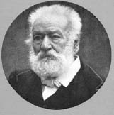

(1802 – 1885)

"Notre Dame'ın Kamburu" ve "Sefiller" gibi romanlarıyla dünya roman tarihine çok büyük yapıtlar armağan etmiş olan Victor Hugo yazarlığının dışında, ülkesinin önde gelen siyasetçilerinden biriydi. Birçok tiyatro oyunu yazarak Fransız tiyatrosunda yeni bir çağın açılmasını sağlayan yazar günümüzde hâlâ dünyanın en çok okunan Fransız yazarlarından biridir...
Dünyanın belki de en tanınan Fransız yazarı olan Victor Hugo, 26 Şubat 1802'de Fransa'nın Besançon kentinde doğdu. Daha 13 yaşına geldiğinde edebiyata olan yeteneği belliydi, çünkü daha o yaşta şiirleriyle ödüller almıştı hatta bu ödüllerden ikisi Fransız Akademisi mansiyon ödülüydü. Liseyi bitirdikten sonra kendini tümüyle edebiyata adadı. 1824 yılında Fransız romantik akım yanlılarının yayın organı olan La Muse Française dergisini kurdu. "Cenacle" adını taşıyan romantik sanatçılar çevresinin üyesi ve odak noktası oldu. 1830-1843 arasında en verimli dönemlerinden birini yaşadı. 1830 yılında sahnelenen ve büyük olaylara yol açan Hernani adlı tiyatro oyunu adeta geleneksel Fransız tiyatrosunun sonu, romantik akımınsa ilanı oldu. Oyun bugün bile Fransız edebiyat tarihinde bir dönüm noktası olarak kabul edilmektedir. Yazar romanları, tiyatro yapıtları ve şiirleriyle başarıdan başarıya koştu. 1831'de Notre Dame'ın Kamburu adlı büyük romanını yayımladı. 1830'lı yıllar boyunca daha çok tiyatro oyunları yazan sanatçı, sürekli tartıştığı eşi Adèle ile evliliğini bir yana bırakıp tiyatro oyuncusu Juliette Drouet ile tam elli yıl sürecek bir ilişki yaşamaya başladı.
1841 yılında Fransız Akademisi'ne üye seçildi. Ancak sonraki oyunu "Les Burgraves"ın başarısızlığı üzerine politik yaşama ağırlık vermeye başladı. Çok sevdiği kızı Leopoldine ve karısının 1843'te Seine Nehri'nde kazayla boğularak ölmeleri üzerine 1852'ye dek yeni yapıt vermedi. 1848 Devrimleri'nden sonra parlemento üyeliğine seçildi. III. Napoléon'un hükümet darbesini engellemeye çalıştı, başaramayınca 1851 yılında Belçika'ya kaçmak zorunda kaldı.
Ateşli bir demokrasi ve cumhuriyet yanlısı olarak imparatorluk rejimini eleştiren yapıtlar yazdı. 1855-1870 arasını küçük bir İngiliz adası olan Guernsey'de geçirdi. O dönem yazarlığının en üretken yılları oldu. 1856'da büyük başarı kazanan şiir kitabı 'Les Contemplations' yayımlandı. 1862 yılında başyapıtı olan Sefiller adlı romanını yayımladı. Bunu 1866'da Deniz İşçileri ve aynı yıl Gülen Adam gibi önemli romanları izledi.
1870'te Louis Bonaparte düşüp Fransa'da Cumhuriyet yeniden kurulunca Paris'e döndü. 1871'de Ulusal Meclis'e seçildi. Artık Fransa'nın en gözde kişilerinden biriydi. 1877'de "Büyükbaba Olma Sanatı" adında, Fransa'nın ilk çocuk kitaplarından birini yayımladı. Gelecekte bir Avrupa Birliği kurulmasının hayalini kuran Victor Hugo, 14 Temmuz 1870'te Hauteville Evi'nin bahçesine bugün hâlâ ayakta olan ve "Avrupa Birleşik Devletleri"ni simgeleyen bir söğüt ağacı dikti. Paris Komünü'nün ezilmesinden sonra komüncülerin bağışlanması için çok uğraştıysa da sonuç alamadı. Giderek siyasal ve toplumsal yaşamdan elini eteğini çekti.
22 Mayıs 1885 tarihinde ölen Victor Hugo'nun 1 Haziran 1885 günü Panthéon'a gömülmesi için yapılan cenaze törenine iki milyondan fazla insanın katıldığı söylenmektedir.
Seçme Romanları: Han d'Islande (1823), Bug-Jargal (1818), Le Dernier Jour d'un Condamné (1829), Notre-Dame'ın Kamburu (1831 – Oda Yayınları, 2007), Claude Gueux (1838), Sefiller (1862 – Kitapzamanı Yayınları, 2007), Deniz İşçileri, (1866 – Oda Yayınları, 1999), L'Homme qui rit (1869), Quatrevingt-treize (1874)